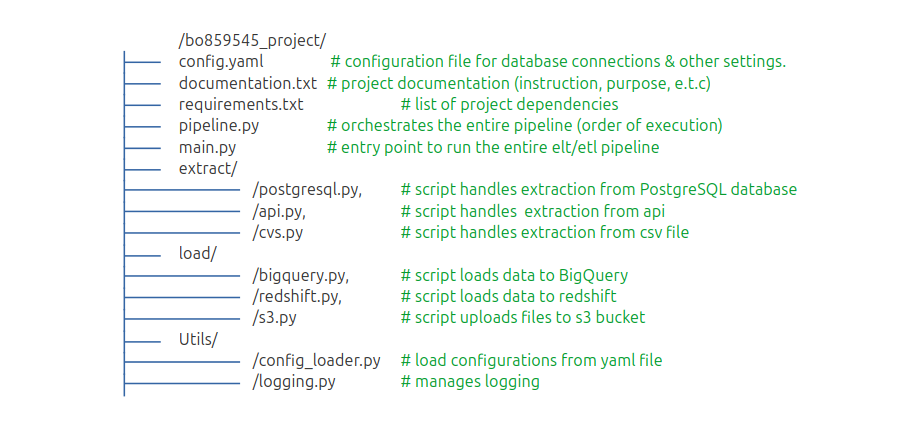
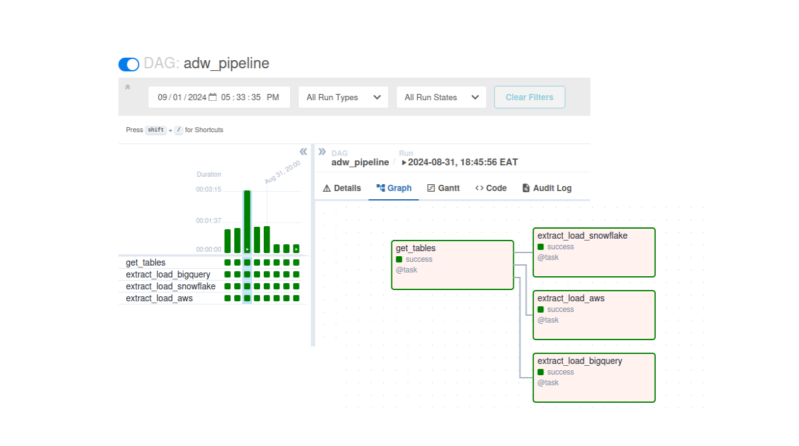

Building Data Pipeline
A modular data pipeline for a retail company.
I'll leverage a combination of Python for writing elt/etl scripts, Apache Airflow for orchestration, BigQuery, Snowflake, AWS Redshift for storage, dbt for transformation & Amazon Managed Workflow for Apache Airiflow to efficiently move data from a PostgreSQL database to BigQuery for analytical processing.
Where is the Data?
PostgreSQL Database

Where do we consolidate the data?
Google BigQuery
Pipeline Design
I'll be using python classes to break the project components into manageable tasks. Python classes can significantly improve code organization, reusability, and scalability. It also ensures separation of concerns and making it easier to scale the ETL/ELT processes, debug issues, and onboard new team members. See figure below: file structure
Create & set user permissions in PostgreSQL
1. Connect to PostgreSQL
$ sudo -u postgres psql
2. Create ETL/ELT User
$ CREATE USER etl_b085954 WITH PASSWORD 'BO@859545';
3. Grant Permissions
$ GRANT USAGE ON SCHEMA operations TO etl_b085954;
$ GRANT SELECT ON ALL TABLES IN SCHEMA operations TO etl_b085954;
config.yaml
yaml configuration file for PostgreSQL, BigQuery connections, logging, & other settings.
postgres:
type: "postgresql"
host: "localhost"
port: 5432
database: "postgres"
user: "b085954"
password: "@Brian"
query: "SELECT * FROM sales"
bigquery:
project_id: "adventureworks-431609"
dataset_id: "adw"
table_id: "your_table"
credentials_json: "path/to/your/credentials.json"
logging:
level: "INFO"
format: "%(asctime)s - %(name)s - %(levelname)s - %(message)s"
file: "pipeline.log"
filemode: "a"
requirements.txt
list of dependencies & version to be installed
pandas => 2.2.3
requests
sqlalchemy == 2.0.36
logging
pyyaml
os
google-cloud-bigquery
Installing requirements.txt
$ pip install -r requirements.txt
extract/postresql.py
.py script handles extraction from PostgreSQL database
from sqlalchemy import create_engine
import pandas as pd
class PostgreSQL:
def __init__(self, config, logging):
self.config = config
self.logging = logging
def extract(self) -> pd.DataFrame:
"""
:extracts data from a PostgreSQL database.
:param file_path: Path to the YAML configuration file
:return: pandas DataFrame
:raises ExceptionError: If the extraction fails
"""
db_config = self.config['postgres']
try:
engine_url =
f"{db_config['type']}://{db_config['user']}:
{db_config['password']}@"
{db_config['host']}:
{db_config['port']}/{db_config['database']}"
engine = create_engine(engine_url)
self.logger.info("Connecting to PostgreSQL database...")
with engine.connect() as connection:
self.logger.info("Executing query ...")
df = pd.read_sql(db_config['query'], connection)
self.logger.info(f"Extracted {len(df)} records from PostgreSQL database.")
return df
except Exception as e:
self.logger.error(f"PostgreSQL extraction failed: {e}" )
raise
utils/config_loader.py
.py script loads configurations from config.yaml file
import yaml
class ConfigLoader:
def __init__ (self , config_path='config.yaml') -> Dict:
self.config_path = config_path
self.config = self.load_config()
def load_config(self) -> None:
"""
:loads configuration from a YAML file.
:param file_path: Path to the YAML configuration file
:return: Configuration dictionary
:raises FileNotFoundError: If the configuration file is not found
:raises yaml.YAMLError: If there's an issue parsing the YAML file
"""
if not os.path.exists(self.config_path):
raise FileNotFoundError(
f"Configuration file '{config_path}' not found.")
with open(self.config_path, 'r') as file:
try:
config = yaml.safe_load(file)
except: yaml.YAMLError as exc:
raise: Exception(f"Error parsing YAML file: {exc}")
return config
utils/logging.py
.py manages logging
import logging
class Logger:
def __init__ (self, config):
self.logger = logging.getLogger('bo859545_pipeline' )
self.logger.setLevel(
getattr(logging, config['logging']['level'].upper(),
logging.INFO))
# Prevent adding multiple handlers in interactive environments
if not self.logger.handlers:
# File handler
fh = logging.FileHandler(config['logging']['file'])
fh.setLevel(getattr(logging,
config['logging']['level'].upper(), logging.INFO))
# Console handler
ch = logging.StreamHandler()
ch.setLevel(getattr(logging,
config['logging']['level'].upper(), logging.INFO))
# Formatter
formatter = logging.Formatter(
'%(asctime)s - %(name)s - %(levelname)s - %(message)s'
)
fh.setFormatter(formatter)
ch.setFormatter(formatter)
# Add handlers
self.logger.addHandler(fh)
self.logger.addHandler(ch)
def get_logger(self):
return self.logger
/pipeline.py
.py script ochestrates (order of execution) of the entire pipeline
from extract.postgres import PostgreSQL
import pandas as pd
class Pipeline:
def __init__ (self, config, logger):
self.config = config
self.logger = logger
self.extractors = self.initialize_extractors()
def extractor(self):
extractor = PostgreSQL(self.config, self.logger)
try:
df = extractor.extract()
return df
def loader(self):
pass
/main.py
entry point to run the entire elt/etl pipeline
from utils.config_loader import ConfigLoader
from utils.logger import Logger
from pipeline.pipeline import Pipeline
def main():
# Load configuration
config_loader = ConfigLoader()
config = config_loader.get_config()
# Setup logger
logger_instance = Logger(config)
logger = logger_instance.get_logger()
logger.info("Starting the data extraction process...")
# Initialize and run the pipeline
pipeline = Pipeline(config, logger)
pipeline.run()
if __name__ == "__main__":
main()
Apache Airflow - Set Up
# Apache Airflow - Local Set-Up
$ python3 -m venv airflow-env # create virtual environment
$ source airflow-env/bin/activate # activate virtual environment
$ export AIRFLOW_HOME=~/airflow
$ pip install apache-airflow
$ airflow db init
$ airflow webserver -p 8080 #launch webserver
$ airflow sheduler #launch scheduler
Airflow Weberver UI
Orchestration - Apache Airflow Workflow
Airflow has its own directory structure, primarily the dags folder where DAG definitions reside. To integrate the existing pipeline, I'll adjust the project structure and move the pipeline.py to dag folder.
/dag/pipeline.py
# defining a dag - Direct Acyclic Graph
from datetime import datetime, timedelta
from airflow import DAG
from airflow.operators.python_operator import PythonOperator
from extract.postgresql import PostgreSQL
from utils.config_loader import ConfigLoader
from utils.logging import Logger
import pandas as pd
import os
args{
”owner” : BO859545 ,
"retries": 1,
"retry_delay":timedelta(minutes=5)
}
# Define the DAG
with DAG(
'data_pipeline_dag',
default_args=default_args,
description='Operations Department data pipeline',
schedule_interval=timedelta(days=1),
start_date=datetime(2024, 1, 1),
catchup=False,
) as dag:
def load_config(**kwargs):
"""Task to load configuration."""
config = load_config()
logger = get_logger(config)
# Push to XCom for other tasks
kwargs['ti'].xcom_push(key='config', value=config)
kwargs['ti'].xcom_push(key='logger', value=logger)
logger.info("Configuration loaded and logger initialized.")
def postgresql(**kwargs):
"""Task to extract data from the database."""
ti = kwargs['ti']
config = ti.xcom_pull(key='config' , task_ids='load_configuration')
logger = get_logger(config)
return PostgreSQL(config, logger)
# Define tasks
load_config_task = PythonOperator(
task_id='load_config',
python_callable=config_loader,
provide_context=True,
)
extract_db_task = PythonOperator(
task_id='extract postgresql',
python_callable=postgresql,
provide_context=True,
)
Running Pipeline
